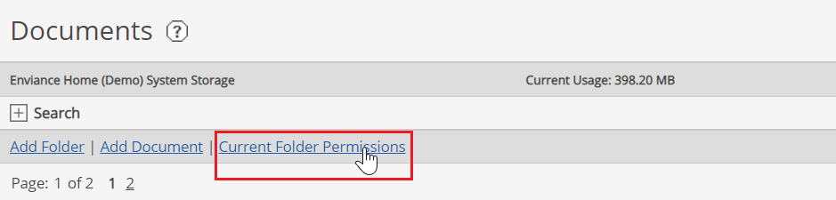
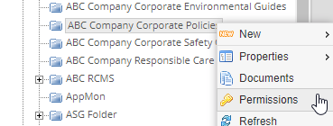
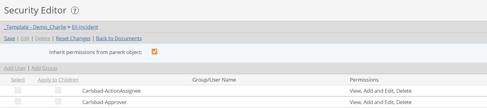
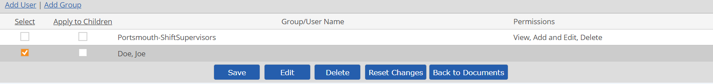
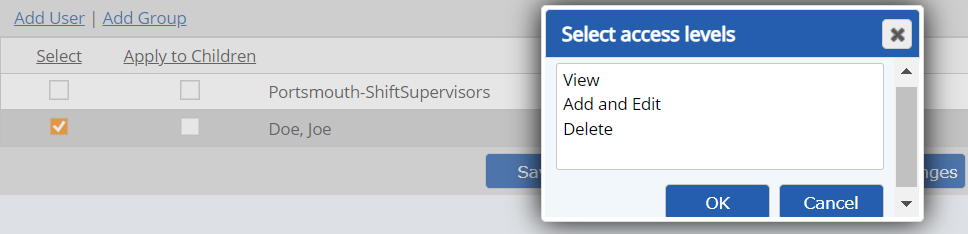

Document permissions control read and write permissions granted to users for the documents stored in the Documents library. Document permissions are in addition to the permissions granted to users for system objects, and should be set up to be compatible with object permissions. In order for users to view documents associated with an object, they must be granted permission to the documents as well as the object.
In addition to Administrators, users with the Manage Documents right may set permissions on documents or document folders. (See User Rights.)
Within the Documents library, permissions can be assigned in the most efficient manner by applying them to document folders.
However, you can also assign permissions to individual documents if necessary.
Document permissions include View, Add and Edit, Delete.
Users with View permissions can:
Users with Add and Edit permissions on a folder or document can:
Delete permission must be explicitly granted to allow a user to delete documents.
Object permissions in the system model work in combination with the document permissions. To associate a document with an object, a user must have the Modify Properties permission on the object and View or Edit permissions on the document.
To associate documents with a task, a user must also have the Create and Complete Tasks permission for the related object.
To access documents associated with an object or a task, users must also have View or Add and Edit permissions on the documents. The View Properties permission on an object does not automatically grant permission to view associated documents.
The Manage Documents user right is required to view or modify document permissions.
The Manage Documents right gives global permissions to the documents and the Documents library. This right is customarily given only to an individual who has librarian responsibilities in the system.
You can add, delete or modify permissions on document folders or on individual documents if permissions are not set to inherit. If permissions are inherited, you must edit the parent folder permissions, or disable inheritance for the subfolder.
When permissions are not inherited and users or groups are added to the permissions, you can apply the same permissions to all subfolders and documents by choosing the option to Apply to Children.
Permissions on documents are best granted through folders, but may be assigned to individual documents if necessary. Inheritance is enabled by default on creation of a folder. Top level folders inherit permissions from the Document object in the tree.



Click Add User or Add Group.
From the selection window, select the users or groups to add by checking the boxes and click Select.
The users/groups are added to the permissions list.
Select the permissions to grant.
With the Select box checked for the new users/groups, click Edit. 
From the pop-up, select the permissions you want to grant, then click OK.
View: Allows users to view documents and associate documents in this folder to system model objects to which they also have permissions.
Edit: Allows users to add documents, create and edit subfolders and documents in this folder (including deleting documents and folders), and manage document versions.
Delete: Allows users to delete documents. 
If the document folder is not set to inherit permissions, you can extend the permissions to all child folders and documents by checking Apply to Children.
Click OK to save permissions for the selected users.
Click Save to save all changes.
Click Delete.
The Permissions column is now blank for the user. Next you must click save to finalize.
If permission on subfolders are not set to inherit permissions and you want to remove the user's permission from those folders, check Apply to Children before saving. If subfolders are not set to inherit permissions, the user’s permissions on all documents in subfolders will be retained unless you check Apply to Children.
Select Save.
When a report includes document associations, the user running the report will need to have at least one of the following:
If user does not have adequate permissions, a notice of missing data will appear in the report and a "request permissions" link will be available to allow the user to send an email to the Administrator requesting permission.